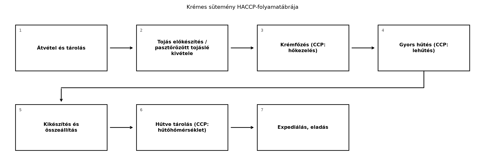

Kora reggel van a cukrászüzemben. Az előkészítő pultnál a tanuló éppen a krémes süteményhez való vaníliakrémet készíti. A folyamatábrán három kritikus pont (CCP) szerepel: a krémfőzés, a gyors hűtés és a hűtve tárolás. A műszakvezető megkéri, hogy mutassa meg a hűtő-hőmérsékletnaplót – az utolsó előtti bejegyzésnél 7 °C-ot írtak be. A kérdés: mi volt a helyesbítő tevékenység? A tanuló nem tudja. Ebben az alfejezetben azt tanuljuk meg, hogyan kell a HACCP-rendszert a cukrászati termelés mindennapjaiban működtetni: mi minősül kritikus pontnak, hogyan kell mérni, dokumentálni, és mit kell tenni, ha a mért érték átlépi a kritikus határt.
A HACCP-elemzés alapja a technológiai folyamatábra. A következő ábra a krémes sütemény cukrászüzemi készítésének fő lépéseit mutatja; a három kritikus szabályozási pontot (CCP-t) kiemelve.

Az ábra nem helyettesíti a műhely saját, részletes folyamatábráját, de segít megérteni, hol kell beavatkozni. A HACCP lényege ugyanis az, hogy a veszélyeket ott szabályozzuk, ahol a legnagyobb a kockázat, és ahol mérhető, dokumentálható beavatkozás lehetséges.
Definíció. Kritikus szabályozási pont (CCP, angolul Critical Control Point): a folyamat azon lépése, ahol a veszélyt megelőző, kiküszöbölő vagy elfogadható szintre csökkentő szabályozás alkalmazható, és ahol a szabályozás elmulasztása nagy valószínűséggel megbetegedést okozó, elfogadhatatlan kockázatot eredményez.
Szabály. Cukrászati termelésben CCP-nek elsősorban azokat a lépéseket jelöljük ki, amelyekben a hőmérséklet, az idő vagy a kettő együtt mérhető, és a beavatkozás azonnal elvégezhető. A krémfőzés, a gyors hűtés, a hűtve tárolás és a fagylaltkeverék pasztőrözése tipikusan ilyen.
Jogszabály. A HACCP-alapú eljárásokat az 852/2004/EK rendelet (élelmiszer-higiénia) írja elő a vendéglátó és cukrászati vállalkozások számára is. A magyarországi hatósági gyakorlatban a NÉBIH és a kormányhivatalok élelmiszerlánc-biztonsági szervei ellenőrzik a HACCP-dokumentációt és a naplók vezetését (ellenőrizendő: aktuális hatósági szervezet és útmutatók).
Higiénia. A CCP-k mérése soha nem puszta adminisztráció. A hőmérsékletnaplóba beírt érték mögött egy vendég egészsége áll: ha a hűtő nem tartja a hőmérsékletet, a krémes süteményben mikroorganizmusok szaporodhatnak el. A mérőműszereket ezért rendszeresen ellenőrizni kell, a bejegyzést pedig annak kell megtennie, aki a mérést valóban elvégezte.
A következő táblázat összefoglalja a leggyakoribb cukrászati CCP-ket, a hozzájuk tartozó veszélyt és a kritikus határt. Minden hőfok–idő érték tanulási példa, amelyet a gyártói útmutató, a vonatkozó magyar és uniós előírás, valamint a saját HACCP-terv szerint kell pontosítani (ellenőrizendő: hatályos jogszabály/NÉBIH-útmutató).
| CCP lépés | Jellemző termék | Veszély | Kritikus határ (tanulási példa) | Monitorozás |
|---|---|---|---|---|
| Krémfőzés | Tojáskrémek, fagylaltkeverék | Salmonella, Staphylococcus aureus | maghőmérséklet legalább 85 °C, 5 percig | digitális maghőmérő, időzítő |
| Gyors hűtés | Főzött krémek, pudingok | spórás baktériumok csírázása, toxinképződés | 60 °C-ról 20 °C-ra 2 órán belül, majd +5 °C alá 4 órán belül | hőmérő, stopper, hűtési napló |
| Hűtve tárolás | Kikészített krémes, tejszínes sütemények | mikrobaszaporodás, toxinok | termékmag vagy tároló hőmérséklete +5 °C alatt | hűtő-hőmérő, napló |
| Fagylaltkeverék hőkezelése | Fagylalt alap | Salmonella, egyéb vegetatív patogének | 85 °C, 5 perc, vagy 65 °C, 30 perc pasztőrözés | maghőmérő, időzítő |
A táblázatban szereplő értékek nem hatósági előírások, hanem a szakirodalomban és a jó higiéniai gyakorlatban elterjedt paraméterek. A saját üzemben ezeket a HACCP-tervben rögzített, az adott technológiára igazolt értékekkel kell helyettesíteni.
A tojás különösen érzékeny alapanyag. A nyers tojás héján és belsejében is jelen lehet a Salmonella baktérium, ezért a tojás héját a feltörés előtt tisztítani és fertőtleníteni kell, a feltört tojást pedig nem szabad a később hőkezelés nélkül felhasznált készítményekbe tenni. A tojást tárolás előtt nem mossuk, és a megmosott tojást nem tesszük vissza a hűtőbe (ellenőrizendő: NÉBIH-útmutató, a tojás forgalmazására vonatkozó 589/2008/EK rendelet).
Szabály. Nyers, hőkezelés nélküli krémhez, habhoz vagy desszerthez (például tiramisu, egyes mousse-ok) csak pasztőrözött tojásterméket szabad felhasználni. Ha a technológia friss tojást igényel, a tojásos részt hőkezelt eljárással kell elkészíteni (főzött cukorszirupos vagy melegen vert eljárás, például pâte à bombe, olasz habcsók, angolkrém – a hőkezelési kritikus határ elérésével; ellenőrizendő: hatályos útmutató). A héj fertőtlenítése a héjon lévő szennyeződés átvitelét csökkenti, de a tojás belsejében lévő Salmonellát nem pusztítja el, ezért nyers, hőkezelés nélküli krémhez nem elég.
Technológiai lap. Tojás-előkészítő kialakítása és használata:
Higiénia. A tojás feltörésekor a kéz és a kötény szennyeződhet, a Salmonella keresztszennyeződést okozhat. Ezért a tojás-előkészítőt minden munkafázis után fertőtleníteni kell.
Most készítsük el a krémes sütemény HACCP-elemzését. A termék vajas/leveles tésztából és főzött vaníliakrémből áll (lásd a Krémesek: vajas/leveles és forrázott tésztából alfejezetet). Az elemzéshez a következő lépéseket követjük:
Az alábbi táblázat a krémes sütemény CCP-inek HACCP-elemzését mutatja. A hőfok- és időértékek tanulási példák (ellenőrizendő: hatályos útmutató).
| Lépés | Veszély | Megelőzés | Kritikus határ (tanulási példa) | Monitorozás | Helyesbítő tevékenység | Dokumentum |
|---|---|---|---|---|---|---|
| Krémfőzés | Salmonella és Staphylococcus aureus túlélése a nem megfelelő hőkezelés miatt | megfelelő hőmérséklet és idő biztosítása | maghőmérséklet 85 °C, 5 perc | maghőmérő 5 percenkénti ellenőrzéssel, időzítő | krém újramelegítése, ha elérhető; ellenkező esetben selejtezés; a főzőberendezés ellenőrzése | krémfőzési napló |
| Gyors hűtés | spórás baktériumok csírázása, toxin képződése a lassú hűtés közben | szétterítés, jéggel vagy gyorshűtővel történő hűtés | 60 °C-ról 20 °C-ra 2 óra alatt, majd +5 °C alá 4 óra alatt | hőmérő, stopper, időpontok rögzítése | a tétel visszahűtése, ha még a határon belül van; egyébként selejtezés | hűtési napló |
| Hűtve tárolás | mikrobák elszaporodása és toxin képződése a túl magas hőmérsékleten | működő hűtőberendezés, rendszeres ellenőrzés | +5 °C alatt | hűtő-hőmérő óránként, termékhőmérő szúrópróbaszerűen | azonnali hűtőcsere vagy -javítás; a termékek maghőmérsékletének mérése: ha a maghőmérséklet ≤ 5 °C (vagy a HACCP-tervben rögzített tűrésen belül, pl. legfeljebb 2 óráig ≤ 8 °C – tanulási példa, ellenőrizendő), a termék áthelyezhető; különben, vagy ha az időtartam ismeretlen, a krémes/tejszínes/tojásos terméket selejtezni kell | hűtő-hőmérsékletnapló |
A táblázatban a „krémfőzési napló” és a „hűtési napló” a HACCP-terv mellékletei, amelyeket a dolgozók munkavégzés közben töltenek ki. A dokumentumok megőrzési idejét a saját HACCP-kézikönyvben rögzíteni kell (ellenőrizendő: a vállalkozás belső szabályzata és a hatályos iratmegőrzési kötelezettség).
A hűtő-hőmérsékletnapló a legismertebb HACCP-dokumentum. Akkor is megbízható, ha a bejegyzések valós méréseken alapulnak, és a túllépés azonnali intézkedést von maga után.
Technológiai lap. Hűtő-hőmérsékletnapló mintája:
| Dátum | Idő | Hűtő megnevezése | Mért hőmérséklet (°C) | Ellenőrző aláírása | Megjegyzés / helyesbítő tevékenység |
|---|---|---|---|---|---|
| 2024. 05. 12. | 07:00 | Kézi hűtő 1 | 4,1 | Kovács P. | – |
| 2024. 05. 12. | 10:00 | Kézi hűtő 1 | 6,8 | Kovács P. | hűtő beszabályozva, 11:00-kor 4,3 °C; termékek maghőmérséklete 4,6 °C, a túllépés kb. 1 óra, termékek áthelyezve, selejt nincs |
| 2024. 05. 12. | 13:00 | Kézi hűtő 1 | 4,2 | Nagy T. | – |
Szabály. A hűtő hőmérsékletét legalább naponta, munkaidőben, de a meleg konyhában és nyáron akár óránként is ellenőrizni kell. A mért értéket rögtön be kell írni, és ha az meghaladja a kritikus határt, azonnal helyesbítő tevékenységet kell kezdeményezni.
A fenti mintában a 10:00 órás mérés 6,8 °C, ami meghaladja a +5 °C-os határt. A helyesbítő tevékenység: a hűtő termosztátját lejjebb vették, és 11:00-kor ellenőrző mérést végeztek. A megjegyzésben ez pontosan látható. Ez a helyes dokumentálás.
Jogszabály. A hűtőberendezéseket hőmérővel kell ellátni, és a hőmérsékletet rendszeresen ellenőrizni kell. A vendéglátó vállalkozásokra vonatkozó részletes előírásokat a magyar élelmiszer-higiéniai rendelet és a NÉBIH útmutatói tartalmazzák (ellenőrizendő: hatályos rendelet száma és előírásai).
Ha egy CCP-nél a mért érték túllépi a kritikus határt, a dolgozó nem várhat a műszak végéig, hanem azonnal be kell avatkoznia. A helyesbítő tevékenység két részből áll:
Szabály. A helyesbítő tevékenységet mindig írásban kell rögzíteni az adott naplóban vagy egy külön eltérési lapon. A bejegyzésnek tartalmaznia kell: a túllépés időpontját, a mért értéket, a közvetlen intézkedést, az ellenőrző mérés eredményét, a termék további sorsát és az aláírást.
Példa. A hűtő-hőmérsékletnaplóban a 6,8 °C-os méréshez a következő bejegyzést tette a dolgozó: „Hűtő 1 termosztátja lejjebb állítva. A termékek maghőmérséklete 4,6 °C volt, a túllépés a 07:00-i és a 10:00-i mérés közötti legfeljebb 3 óra lehetett, a HACCP-terv tűrése szerint a krémeseket a másik hűtőbe tettem át, selejt nincs. Ellenőrzés 11:00-kor: 4,3 °C.” Ez a bejegyzés megmutatja, hogy a dolgozó nemcsak lejegyezte a hibát, hanem intézkedett is.
Megjegyzés. A helyesbítés (korrekció) a hibás tétel azonnali kezelése; a helyesbítő tevékenység ennél több: az ok feltárása és megszüntetése, hogy a hiba ne ismétlődjön. A jó HACCP-rendszerben a hibák ismétlődését belső audit keretében vizsgálják, és szükség szerint a HACCP-tervet módosítják.
Cél. A tanuló valós körülmények között vezessen hűtő-hőmérsékletnaplót, és gyakorolja a helyesbítő tevékenységet.
Eszközök és anyagok. digitális hűtő-hőmérő, stopper, nyomtatott hűtő-hőmérsékletnapló, toll, egy működő hűtőberendezés (tanüzemi vagy otthoni, háztartási), a tanműhely HACCP-kézikönyve (ha van).
Higiéniai munkakezdés. Tiszta munkaruha, hajháló, kézmosás. A hőmérő szondáját élelmiszerrel érintkezésre alkalmas fertőtlenítőszerrel töröljük át, majd öblítsük le.
Lépések:
Ellenőrzési pontok. A naplóban nincs üres sor, a bejegyzések aláírással vannak ellátva, a túllépésekhez helyesbítő tevékenység tartozik.
Tipikus hibák. A dolgozó nem a hűtőt méri, hanem a külső hőmérsékletet; a hőmérőt a hátlapra teszi, ami fagyos lehet; a bejegyzést előre beírja; a túllépést észleli, de nem ír be semmit.
A HACCP-dokumentáció minőségét nem pusztán a kitöltött naplók száma jelzi. A belső ellenőrzés során a következőket kell vizsgálni:
Táblázat. HACCP-napló önellenőrző lista:
| Ellenőrzési szempont | Kérdés | Megfelelő, ha |
|---|---|---|
| Hőmérsékletnapló | Minden munkanapra van bejegyzés? | Igen, a hűtőkre naponta legalább egyszer |
| Helyesbítő tevékenység | Túllépés esetén van intézkedés? | Igen, be van írva, és van ellenőrző mérés |
| Mérőeszköz | Hőmérő kalibrált? | A kalibrálási bizonylat érvényes |
| Oktatás | Az új dolgozó ismeri a CCP-ket? | Az oktatási naplóban aláírással igazolta |
| Dokumentum-megőrzés | A naplók visszakereshetők? | A megadott ideig rendelkezésre állnak |
Hiba 1. A hűtő hőmérsékletét csak reggel mérik, a délutáni ellenőrzés elmarad. Tünet: a naplóban minden nap ugyanaz a reggeli bejegyzés, délutáni mérés nincs. Ok: a munkaszervezés nem adja meg, ki felel a délutáni mérésért. Megelőzés: a HACCP-tervben konkrét személyt és időpontot kell kijelölni.
Hiba 2. A túllépést bejegyzik, de helyesbítő tevékenységet nem tüntetnek fel. Tünet: a naplóban 7,2 °C szerepel, a megjegyzés rovat üres. Ok: a dolgozó nem tudja, mit kell tenni, vagy fél beírni a hibát. Megelőzés: oktatás és gyakorlás, a műszakvezető pedig rendszeresen ellenőrizze a naplót a hibákra is.
Hiba 3. A gyors hűtés határidejét nem dokumentálják. Tünet: a krémfőzési naplóban ott a főzés hőfoka, de a hűtési napló hiányzik, vagy nem rögzítik a hűtés kezdeti és végső hőmérsékletét. Ok: a gyors hűtést nem tekintik CCP-nek, pedig a spórás baktériumok szaporodása éppen a langyos krémben a leggyorsabb. Megelőzés: a HACCP-folyamatábrán a gyors hűtést is CCP-ként jelöljük, és a naplót a krémfőzési napló mellé kötjük.
Egy cukrászüzemben hatósági ellenőrzést tartottak. Az ellenőr a hűtő-hőmérsékletnaplót kérte. A naplóban a reggeli bejegyzések rendben voltak, de az ellenőr észrevette, hogy az utolsó két napon a délutáni mérések hiányoztak. A vezető azt mondta, hogy a délutános dolgozó beteg volt. Az ellenőr feljegyezte a hiányosságot, és felszólította a vállalkozást a munkaszervezés javítására. A tanulság: a HACCP-rendszer nemcsak a termelés közbeni mérésekből áll, hanem a mérési kötelezettség folyamatos teljesítéséből is. Ha hiányzik a mérés, a rendszer nem működik, és a hatóság ezt szankcionálhatja. A vállalkozás helyesbítő tevékenysége: kijelöltek egy tartalék dolgozót a délutáni mérésekre, és az oktatási naplóba bejegyezték a feladatot.
Továbbvitt eredmény. Az ebben az alfejezetben elkészített CCP-táblázatot és hűtő-hőmérsékletnapló-mintát a későbbi Nyersanyagok beszerzése, átvétele, tárolása és előkészítése alfejezetben a beszállítói átvételnél, a Cukrászati termékcsoportok, megnevezések és a technológiai lap alfejezetben a technológiai lapok összeállításánál, a Tojáskrémek I: főzött sárgakrém és vaníliakrém alfejezetben a krémfőzésnél, a A fagylaltkészítés és -értékesítés higiéniája alfejezetben a fagylaltkeverék hőkezelésénél, valamint a Minőségbiztosítási rendszerek, nyomon követhetőség és termékvisszahívás alfejezetben a dokumentációs rendszernél használjuk fel.
1. feladat (A). Határozd meg röviden a kritikus szabályozási pont (CCP) fogalmát, és nevezz meg három tipikus cukrászati CCP-t.
2. feladat (A). Töltsd ki a hiányzó rovatokat a hűtő-hőmérsékletnaplóban: Dátum: 06. 10., Idő: 09:00, Hűtő: Vitrin, mért hőmérséklet: 5,6 °C, a megjegyzésbe írj egy lehetséges helyesbítő tevékenységet.
3. feladat (B). Egy hűtő hőmérsékletét 08:00-tól 16:00-ig óránként mérték. Az eredmények: 4,0; 4,2; 4,8; 5,1; 6,3; 7,2; 8,0; 8,5; 7,9 °C. Mely órákban volt kritikus határ túllépés, ha a határ +5 °C? Mikor kellett volna elindítani a helyesbítő tevékenységet? Mit kell tenni a hűtőben tárolt krémes, tejszínes, tojásos termékekkel, ha a termékek maghőmérsékletét nem mérték, és a HACCP-terv szerinti tűrés legfeljebb 2 óra +5 °C fölött (tanulási példa, ellenőrizendő)?
4. feladat (B). A krémes sütemény krémfőzésekor a dolgozó 78 °C-ot mért a krém maghőmérsékleteként. A kritikus határ 85 °C, 5 perc. Írd le a helyesbítő tevékenység lépéseit, és add meg, milyen dokumentumban kell ezt rögzíteni.
5. feladat (C). Egy cukrászüzemben a hűtő-hőmérsékletnaplóban minden nap ugyanaz a 4,5 °C szerepel, ceruzával írva, áthúzások nélkül. Az egyik dolgozó azt mondja, hogy ő sosem mér, csak beírja az értéket, mert „úgysem változik”. Elemezd a hibát: milyen kockázatot jelent, és milyen intézkedéseket hoznál a javításra?
6. feladat (D). Vezess hűtő-hőmérsékletnaplót egy napig (otthoni vagy tanüzemi hűtővel). Mérd meg a hűtő belső hőmérsékletét reggel, délben és este. Ha túllépést tapasztalsz, végezd el a helyesbítő tevékenységet, és írd be a naplóba. Értékeld a tapasztalatokat a gyakorlati útmutató szempontjai szerint.
Önellenőrzés – válaszok
1. feladat. A CCP a folyamat olyan lépése, ahol a veszélyt megelőző, kiküszöbölő vagy elfogadható szintre csökkentő szabályozás alkalmazható, és ahol a szabályozás elmulasztása nagy valószínűséggel megbetegedést okozó kockázatot eredményez. Tipikus cukrászati CCP-k: krémfőzés hőkezelése, gyors hűtés, hűtve tárolás, fagylaltkeverék pasztőrözése.
2. feladat. A naplóbejegyzés például: Dátum: 06.10., Idő: 09:00, Hűtő: Vitrin, Mért hőmérséklet: 5,6 °C, Megjegyzés: „Termosztát lejjebb, ellenőrzés 10:00-kor: 4,7 °C.” A 5,6 °C meghaladja a +5 °C-ot, ezért helyesbítő tevékenység szükséges.
3. feladat. A mérési sor: 4,0; 4,2; 4,8; 5,1; 6,3; 7,2; 8,0; 8,5; 7,9 °C. A határt 11:00, 12:00, 13:00, 14:00, 15:00 és 16:00 órakor lépte túl (5,1–8,5 °C); a levegő 14:00-kor érte el a 8,0 °C-ot. Már 11:00-kor helyesbítő tevékenység kellett volna (a hűtő ellenőrzése, a termékek maghőmérsékletének mérése, áthelyezés). A túllépés legalább 5 órás volt (11:00–16:00), a termékek maghőmérséklete nem ismert, ezért a hűtőben tárolt krémes, tejszínes, tojásos termékeket a 2 órás tűrést meghaladva ki kell vonni és selejtezni kell; a selejtezést dokumentálni kell.
4. feladat. A mért 78 °C nem éri el a 85 °C-ot, tehát a krém nincs megfelelően hőkezelve. Helyesbítő tevékenység: a krémet azonnal tegyük vissza a tűzhelyre, és addig melegítsük, amíg a maghőmérséklete eléri a 85 °C-ot, majd tartsuk ott 5 percig. Ha ez nem lehetséges, a tételt selejtezni kell. Az eseményt a krémfőzési naplóban kell rögzíteni, a bejegyzésben a mért és az elért hőmérséklettel, az időtartammal és az intézkedéssel.
5. feladat. A hiba: a dolgozó nem mér, hanem valótlan adatot ír be. Ez meghamisítja a HACCP-rendszer alapját, és elfedi a tényleges hűtési problémákat. Kockázat: a hűtő meghibásodhat, a krémes termékek megromlhatnak, és a vendégek megbetegedhetnek. Intézkedés: a dolgozót oktatni kell a CCP-k fontosságáról, a naplóvezetést tollal, a mérést azonnal kell végezni, a vezető szúrópróbaszerűen ellenőrizze a hűtő tényleges hőmérsékletét, és a hamis bejegyzést fegyelmi eljárás követheti. A HACCP-tervben ki kell jelölni a mérésért felelős személyt.
6. feladat (D). A gyakorlati feladat értékelésének szempontjai: a mérések valós időpontokban történtek; a naplóban a dátum, idő, hűtő neve, mért érték és aláírás szerepel; túllépés esetén van helyesbítő tevékenység és ellenőrző mérés; a tanuló szóban el tudja magyarázni a hűtő hőmérsékletének jelentőségét. A várt eredmény: a hűtő hőmérséklete +5 °C alatt marad; a napló kitöltött, hiánytalan.
A HACCP működtetése a cukrászatban a kritikus szabályozási pontok kijelölésével, mérésével és dokumentálásával kezdődik. A leggyakoribb CCP-k a krémfőzés hőkezelése, a gyors hűtés, a hűtve tárolás és a fagylaltkeverék pasztőrözése. A kritikus határok tanulási példák: krémfőzésnél 85 °C, 5 perc; gyors hűtésnél 60 °C-ról 20 °C-ra 2 órán belül, majd +5 °C alá 4 órán belül; hűtve tárolásnál +5 °C alatt. A nyers tojást csak pasztőrözött tojáslével vagy teljes hőkezeléssel lehet biztonságosan felhasználni. A hűtő-hőmérsékletnaplót minden méréskor azonnal, tollal kell vezetni, a túllépéshez helyesbítő tevékenységet kell írni. A helyesbítő tevékenység a hibás tétel visszatartását, a termék sorsáról való döntést és az ok megszüntetését jelenti. A dokumentumok (átvételi lap, hűtő-hőmérsékletnapló, hűtési napló, takarítási napló, oktatási napló) visszakereshetők, aláírással ellátottak, és a belső audit során rendszeresen ellenőrzöttek. Továbbvitt eredmény: a CCP-táblázatot és a hűtő-hőmérsékletnapló sémáját a későbbi alfejezetek használják a krémfőzés, a fagylaltkészítés, a technológiai lapok és a minőségbiztosítási rendszerek témáiban.